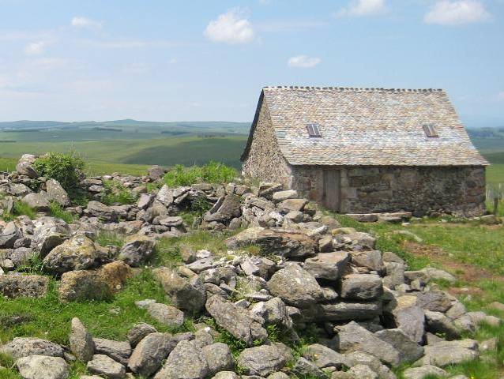

Le mot « buron » désigne ces cabanes de pierre sèche coiffées de lauzes ou de chaume, bâties à même le plateau volcanique de l'Aubrac, souvent à plus de 1200 mètres d'altitude. Leur origine remonte aux moines-hospitaliers de la Dômerie d'Aubrac, qui organisèrent dès le Moyen Âge l'exploitation pastorale des vastes pâturages d'estive appartenant à la communauté religieuse.

Buron d'estive sur le plateau de l'Aubrac
Chaque année, de mai à octobre, le buronnier montait vivre en estive avec son troupeau, isolé des semaines durant dans ces habitations rudimentaires à peine chauffées. Il y transformait chaque jour le lait en tome fraîche, base de l'aligot, et en fourme de Laguiole affinée plusieurs mois, perpétuant un rythme de vie resté quasiment inchangé pendant des siècles.
L'exode rural et la mécanisation de l'après-guerre vident progressivement les burons de leurs occupants saisonniers. Beaucoup tombent en ruine dans la seconde moitié du XXe siècle, avant qu'un mouvement de sauvegarde patrimoniale n'entreprenne, à partir des années 1980-1990, de restaurer certains d'entre eux en refuges, gîtes ou fromageries touristiques.
Le buronnier vivait seul avec ses bêtes, entre ciel et pierre, tout un été durant.
— Tradition orale de l'Aubrac
🥾
Visite pratique
⏱️
Durée
1h à 3h selon le nombre de burons et sentiers empruntés
📊
Difficulté
Facile à modéré · randonnée sur plateau d'altitude
🚗
Accès
Plateau de l'Aubrac, entre Nasbinals et Laguiole, Aveyron
🎟️
Tarif
Randonnée libre gratuite, visites de burons souvent gratuites ou à prix libre
✦ Infos pratiques
Saison d'estive Mai à octobre, burons occupés et souvent ouverts au public
Buronniers d'aujourd'hui Quelques burons encore en activité fromagère l'été
Sentiers balisés GR65 (chemin de Compostelle) et itinéraires de petite randonnée
Burons-refuges Certains restaurés et ouverts en gîte ou point d'étape
Meilleure période Juin à septembre pour rencontrer les buronniers en activité
Stationnement Parkings de randonnée à Nasbinals, Aubrac village et Laguiole
1
La traite en estive
Certains burons encore en activité accueillent les visiteurs au moment de la traite matinale, à heure fixe.
2
La fabrication de la tome
Démonstration du caillage du lait chaud, du moulage et du pressage manuel de la tome fraîche, base de l'aligot.
3
La cave d'affinage
Les fourmes de Laguiole affinent plusieurs mois dans des caves fraîches attenantes au buron ou dans les fromageries du plateau.
4
La dégustation sur site
Nombre de burons proposent tome fraîche et aligot préparé sur place, à savourer face aux paysages du plateau.
🏆
Reconnaissance & patrimoine
🧀
AOP Laguiole
Fromage à pâte pressée non cuite reconnu en appellation depuis 1961, historiquement fabriqué dans les burons d'estive du plateau.
AOP depuis 1961
🏛️
Burons classés monuments historiques
Plusieurs burons remarquables du plateau bénéficient d'une protection patrimoniale au titre de l'architecture rurale traditionnelle.
Monuments historiques
🏔️
Parc naturel régional de l'Aubrac
Créé en 2018, il œuvre à la préservation du patrimoine bâti pastoral, burons compris, et au maintien de l'activité d'estive.
PNR depuis 2018
🧀
Buronniers & tradition
Le buronnier occupait une place à part dans la société pastorale de l'Aubrac : souvent aidé d'un ou deux vachers, il passait l'été isolé, rythmant ses journées entre la traite, la fabrication du fromage et la surveillance du troupeau, dans un dénuement matériel presque total. C'est de cette vie frugale qu'est né l'aligot, plat né du mélange de la tome fraîche encore chaude avec de la purée de pomme de terre, inventé pour nourrir simplement pèlerins et bergers.
Le buron n'était pas seulement un lieu de travail, c'était toute une vie qui s'y jouait chaque été.
— Un ancien buronnier de l'Aubrac
Si la plupart des burons ont aujourd'hui perdu leur fonction fromagère d'origine, quelques familles d'éleveurs perpétuent encore la fabrication traditionnelle de la tome et de la fourme de Laguiole en estive. D'autres burons ont trouvé une seconde vie comme refuges de randonneurs, gîtes d'étape sur le chemin de Compostelle ou petits musées consacrés à la vie pastorale d'autrefois.
📍
Aux alentours
Nasbinals à quelques minutes, étape historique du chemin de Compostelle nichée au cœur du plateau, point de départ de nombreuses randonnées vers les burons.
Laguiole à une vingtaine de minutes, village célèbre pour sa coutellerie et son fromage, où affinent les fourmes issues des burons voisins.
Aubrac village à proximité, ancien site de la Dômerie hospitalière fondatrice de la tradition pastorale du plateau, avec sa tour des Anglais et son église romane.
Élevage de la race Aubrac sur l'ensemble du plateau, les troupeaux qui pâturent en estive autour des burons sont très majoritairement de cette race emblématique.